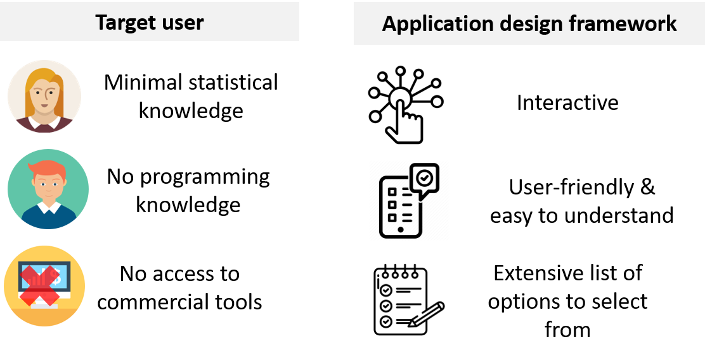
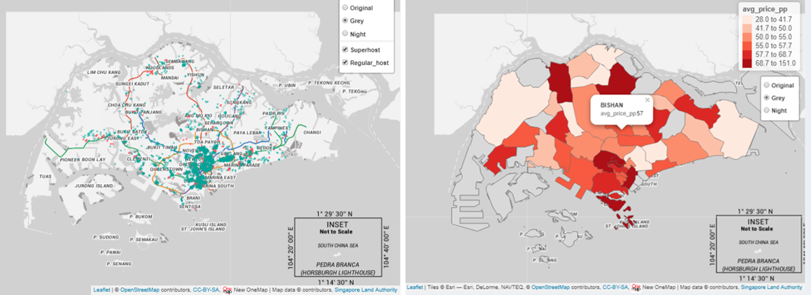
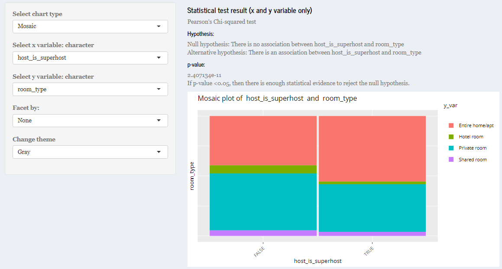

ShinyPET: A Predictive, Exploratory and Text RShiny Application using Airbnb data
Ang Su Yiin, Joey Chua, Kevin Gunawan Albindo, Mentor - Dr. Kam Tin Seong1
1 School of Computing and Information Systems, Singapore Management University

Introduction
With the explosion of affordable data storage and processing technologies, the demand for data-driven decision-making (DDDM) has increased significantly. Although there is an extensive range of commercial statistical tools, they are often subscription-based and demand good technical knowledge to mine and draw insights from. Therefore, it may not appeal to the average user.
Motivation
- Increasing demand for data analytics
- Lack of open source tools for analytics for the average user
Aim to Create R Shiny application to encourage anyone and everyone to make data-based decisions effortlessly
Approach



Exploratory
Summary of dataset
- Interactive table allows selection and filter of variables

Exploratory Geospatial Analysis
- Choropleth map - shows summary of listings by Singapore neighbourhood.
- Point symbol map - shows the distribution of listings throughout Singapore.

Exploratory and confirmatory analysis
1) Panel on the left allows user to seamlessly toggle between different charts.
2) Automated statistical results based on selected variables.
3) Interactive plots - user can select, pan, zoom and download plot.

Text
Predictive
Further work
- Include a data load and wrangling function to accommodate different datasets.
- Combine text and explore module with coordinated linked views for multi-dimensional exploration.
- Predictive models currently limited to 5 models, additional models such as neural network can be included to provide user with wider model selection